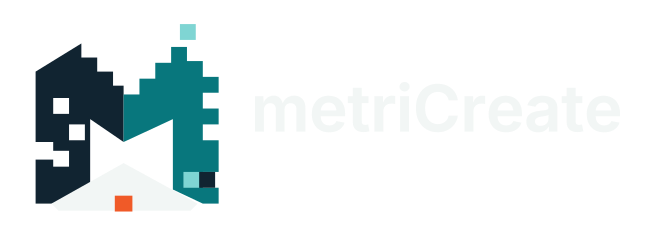

Workflow / 2026Vom Problem zum Produkt
Design mit Beweiskette
Orca koordiniert. Codex entwickelt. Spezialisierte Skills führen. Tests entscheiden.
Ein sichtbares Kontrollzentrum
Orca hält den Arbeitsraum zusammen
Repo-Kontext, Agent-Terminals, Aufgabenstatus und Ergebnisse bleiben an einem Ort nachvollziehbar.
Erst Machbarkeit, dann Geometrie
Preflight bestimmt die richtige Spur
Komplexität, Interface-Reife und Kritikalität entscheiden, ob wir direkt bauen, erst messen oder bewusst stoppen.
Für jede Geometrie die passende Methode
Ein Router statt ein Universal-Prompt
Der Core-Workflow verteilt Teilprobleme an spezialisierte Skills — mit eigenen Regeln, Artefakten und Akzeptanztests.
3D design
Der Codex-Build-Loop
Aus Anforderungen wird eine reproduzierbare Quelle
Jede Schleife verkleinert Unsicherheit — ohne Maße, Interfaces oder Annahmen im Mesh zu verstecken.
Source
Ein Render ist kein Beweis
Prüfung wird mit jedem Gate realer
Automatisierte Geometriechecks beginnen die Beweiskette. Exaktes Slicing, Coupons und reale Belastung schließen sie.
Die Revision ist der rote Faden
Alles zeigt auf dasselbe Produkt
Quelle, Exporte, Tests, Anleitung und Kundendatei tragen dieselbe Identität. Nichts wird still überschrieben.
Autonomie mit harter Grenze
AI bringt bis zum Print-Kandidaten
Was physisch, sicherheitsrelevant, ästhetisch oder kommerziell ist, bleibt eine explizite menschliche Freigabe.
Codex / automatisiert
- Preflight + Spezifikation vorbereiten
- CAD-Quelle und Exporte bauen
- Geometrie, 3MF und G-code prüfen
- Evidence-Paket zusammenstellen
Mensch / verbindlich
- Anforderungen und Konzept freigeben
- Passung, Funktion und Oberfläche prüfen
- Sicherheit und Claims verantworten
- Release und Veröffentlichung signieren
Ein Modell ist noch kein Produkt
Acht Stufen bis live
Unbekannte Evidence bedeutet am Release-Gate: BLOCK.
Jeder Test verbessert das System
Lernen ohne vorschnelle Regeln
Beobachtungen bleiben zunächst scoped Candidates. Erst Erklärung, Eval, Regression und Review machen daraus wiederverwendbares Wissen.
Knowledge
Das Ergebnis ist ein Paket
Druckbar, prüfbar, reproduzierbar
Ein guter Output verbindet editierbare Geometrie, Manufacturing-Dateien und die Evidence, die ihren Einsatz begrenzt.
In einem Satz